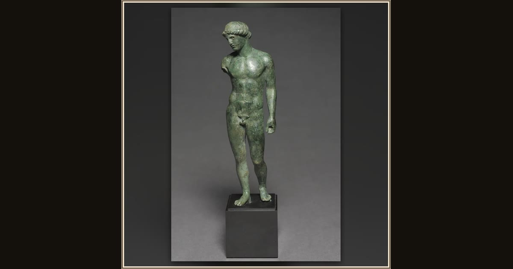

Athlete Making an Offering
Greece, probably from workshop of Locri or Tarentum, Classical Period · c. 450–425 BCE · cma
A Classical Greek bronze statuette of a nude young athlete, the kind of youth whose training in gymnastic follows music in the guardians’ education (403c). Explore its place in Plato's Republic, Book III, section 87.